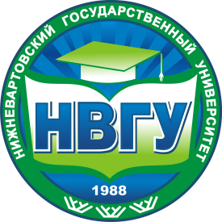

NVSU
Я обучаюсь в НВГУ (Нижневартовский Государственный Университет)
Большинство студентов Нижневартовска учатся именно в НВГУ, так как остальные вузы в городе – это филиалы. Преподавательский состав грамотный. В НВГУ очень активно течет студенческая жизнь – много различных секций, часто проходят разные мероприятия, постоянно проводятся научные конференции и т.д. Все экзамены сдаем сами. Также хорошистам и отличникам платят неплохие стипендии.